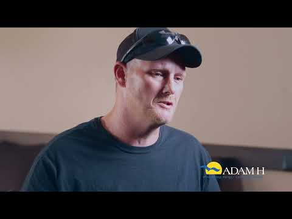

The Substance Abuse and Mental Health Services Administration (SAMHSA) collects information on thousands of state-licensed providers who specialize in treating substance use disorders, addiction, and mental illness.
Search for treatment servicesAbout our organization
Welcome to Crawford-Marion ADAMH
Alcohol, Drug Addiction and Mental Health
Our mission
The mission of the Crawford-Marion ADAMH Board, under local leadership, is to assure the availability of high quality alcohol, drug addiction and mental health services to all residents through planning (assessing needs and resources, and determining priorities); purchasing cost effective services to the extent resources are available; increasing public awareness; coordinating services; and evaluating those services.
We can all be a voice for suicide prevention. Explore Ohio Suicide Prevention Foundation resources to learn how to talk to someone you think might be suicidal.
OSPF resourcesAccess overdose reversal medications (Narcan) through your local health department.
What is happening
Latest updates
Community meeting
September Board Meeting
- Date
- September 24, 2026
- Time
- 5:30pm
- Location
- ADAMH Board, 369 Kensington Place, Marion, OH 43302
Community spotlight
Suicide Prevention for Men
A new statewide initiative is expanding suicide-prevention resources, training, and community support for adult men in Marion County.
Learn morePartner opportunity
Now Hiring: Coleman Health Services
Our contracted provider is seeking applicants for several roles supporting behavioral health, crisis services, case management, nursing, counseling, and administration.
View job openingsCare starts here
Services and support for our communities
Explore local resources for mental health, recovery, crisis support, and everyday wellbeing.
Counseling & Behavioral Health Services
View services
Crawford County Services
View services
Drug & Alcohol Addiction Services
View services
Emergency/Crisis Services
View services
Family Resources
View services
Housing
View services
Marion County Services
View services
Support Groups
View services
Additional Treatment Locations
View services
Voices from our community
Local people.
Lasting impact.
Cara Stevens
School Counselor, Marion City Schools
Kelly Melvin
Executive Director, Marion Treatment Services
Teen Institute
Marion Crawford Prevention Programs
Higher Education
Leslie Beary and Mike Stuckey
Nick Malo
Retired law enforcement officer

Lived Experience
With Sam Malone
Why the Levy Matters
With Kelly Melvin
Why the Levy Matters
With Leslie Beary
Understanding the need
Behind every number,
a person who matters.
Connection, prevention, and access to care matter. These findings help explain the challenges our communities face.
Marion County / Crisis calls / 2025
44%
Loneliness & connection
In 2025, 44% of crisis calls from Marion County residents reported loneliness as their top concern.
Source: Pathways of Central Ohio
Connection starts with a conversation.
Crawford County / Students
39%
Youth depression
38.9% of students reported feeling depressed or sad most days in the past year, even when they felt OK.
Source: 2025 Crawford County CLYDE Survey. Headline rounded.
Marion County / Students
19%
Youth suicide risk
19% of students seriously considered attempting suicide during the past 12 months.
Source: 2024 Marion County CLYDE Survey
Crawford County / Community survey
30%
Concern about substance use
Nearly one-third of community survey respondents identified substance use as a top health concern.
Source: 2026-2028 Crawford County CHIP
National / Adults aged 18+
23.4%
Mental health in adults
23.4% of adults, or 61.5 million people, had any mental illness in the past year.
Source: 2024 National Survey of Drug Use and Health
Each finding represents a different population and reporting period.